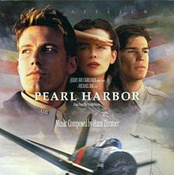
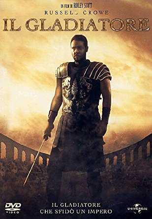
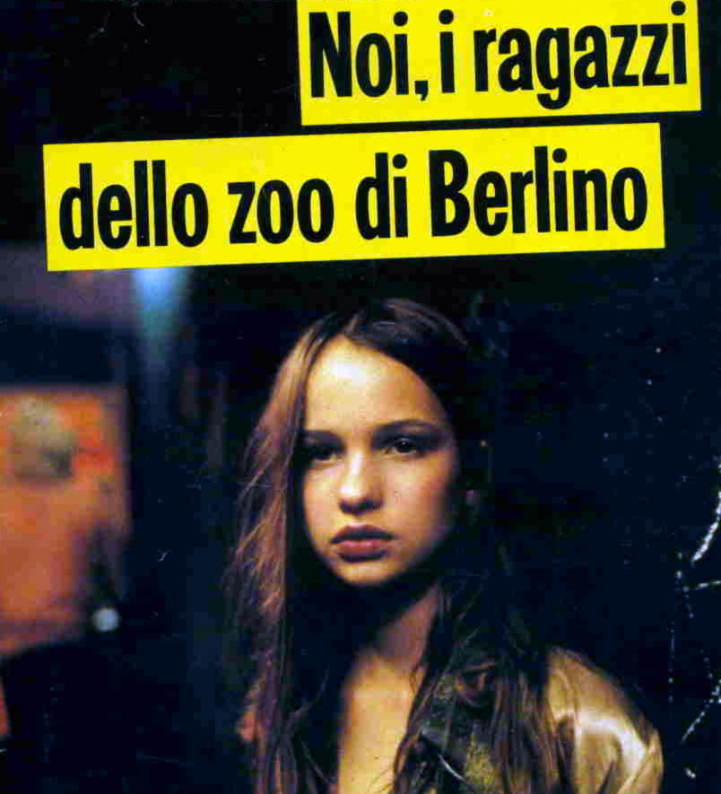

After 5 years as a cook in restaurants, I got bored and started to learn coding.
|  |
Pearl HarborSet during the time of the Japanese bombing of Pearl Harbor, two childhood friends ... Critic Consensus: Pearl Harbor tries to be the Titanic of war movies |
|  |
Il GladiatoreGladiator is a 2000 epic historical drama film directed by Ridley Scott and written by David ..... The film's plot was influenced by two 1960s Hollywood films |
|  |
Noi i ragazzi dello zoo di BerlinoIs a 1981 German junkie drama film directed by Uli Edel that portrays the drug scene in West Berlin in the 1970s, based on the non-fiction book of the same name written following tape recordings of teenage girl Christiane F. |